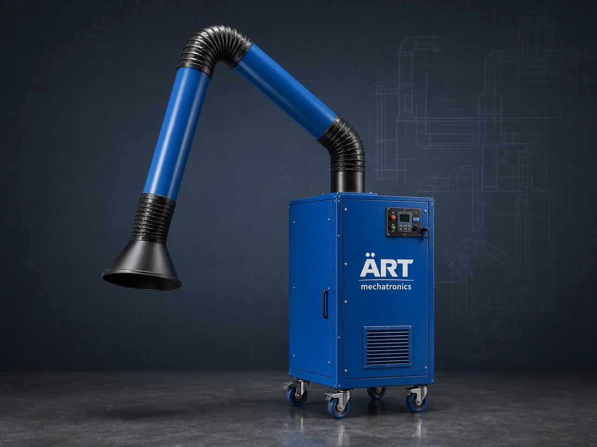

Fume Extraction System (Industrial Fume Extractor & Air Pollution Control Solution)
A Fume Extraction System is an advanced industrial air pollution control solution designed to capture, extract, and filter harmful fumes, smoke, gases, and fine airborne particles generated during industrial processes.

About the Fume Extraction System
These systems are essential for ensuring worker safety, air quality, and compliance with environmental and occupational health standards.
Fume extraction systems are widely used in industries such as welding, metal fabrication, laser cutting, chemical processing, pharmaceuticals, battery manufacturing, electronics, paint shops, and plastic processing, where toxic fumes and gases are generated.
ART Mechatronics offers high-performance fume extraction systems, engineered for efficient removal of hazardous fumes, odor control, and safe air discharge, ensuring a clean and compliant industrial environment.
One machine, many names
Buyers search for this equipment under many terms — we manufacture all of them:
Working Principle of Fume Extraction System
Fumes and gases are generated from:
Fumes are captured using:
Prevents inhalation and exposure
Fume-laden air is transported through:
Fumes are filtered using:
Removes particles, fumes, and odors
Filtered air is:
Types of Fume Extraction Systems
Industries Using Fume Extraction Systems
🔩 Metal & Fabrication Industry
- Welding
- Cutting
- Grinding
⚗️ Chemical & Pharma Industry
- Chemical processing
- Lab environments
🔋 Battery & Lithium Industry
- Cell manufacturing
- Chemical emissions
🎨 Paint & Coating Industry
- Spray booths
- Surface treatment
💻 Electronics Industry
- Soldering fumes
♻️ Plastic & Rubber Industry
- Melting and processing
Features & Advantages
- Efficient removal of harmful fumes and gases
- Improved worker safety and health
- Compliance with environmental and safety standards
- High filtration efficiency
- Odor and gas control
- Energy-efficient operation
- Customizable design for various applications
Technical Highlights
- Airflow Capacity: Custom designed
- Filtration Type: Cartridge / HEPA / Carbon
- System Type: Portable / Centralized
- Construction: Mild Steel / Stainless Steel
- Automation: PLC-based system (optional)
Turnkey Fume Extraction Solutions
ART Mechatronics offers:
- Complete system design & engineering
- Extraction arm & ducting layout
- Equipment manufacturing
- Installation & commissioning
- After-sales service & AMC
Why Choose Art Mechatronics
- Expertise in industrial air pollution control systems
- Customized solutions for hazardous environments
- High-efficiency filtration systems
- Robust and durable design
- Proven performance across industries
Applications
- Welding Workshops
- Metal Fabrication Units
- Chemical Plants
- Pharma Manufacturing Units
- Electronics Manufacturing
- Paint & Coating Plants
Get pricing & specs for the Fume Extraction System
Share the product, target capacity, current process and plant location. These details help our engineers discuss the right machine or line configuration.
One partner, from design to start-up
ART Mechatronics designs, manufactures, installs and commissions your Fume Extraction System solution with regional presence in India, UAE and Thailand.